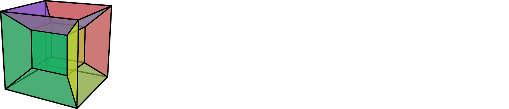
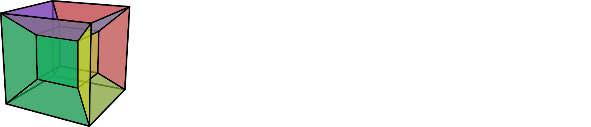

About#
HyperSpy is an open source Python toolbox facilitating the (interactive) analysis of multi-dimensional datasets (hyperspectral images) that has over time grown into an ecosystem including different extension packages dedicated to certain experimental methods.
The development of HyperSpy has been motivated by the data analysis needs of the electron microscopy community, but in the meantime it is proving useful in many other fields.
Brief History#
Originally developed as EELSlab starting in 2007, the package was renamed to HyperSpy in 2010 and open-sourced on GitHub when the broader value for the analysis of analytical electron microscopy data became apparent.
In 2015, HyperSpy was migrated to Python 3. The last version supporting Python 2 was 0.8.3. The first major release, version 1.0.0, was announced in 2016.
In 2019, with version 1.5.0, the mechanism to register extension packages was introduced and subsequently first domain-specific packages were developed. With the second major release, version 2.0.0, code dedicated to specific methods was split out of HyperSpy and the input-output capabilities were moved to the dedicated package RosettaSciIO.